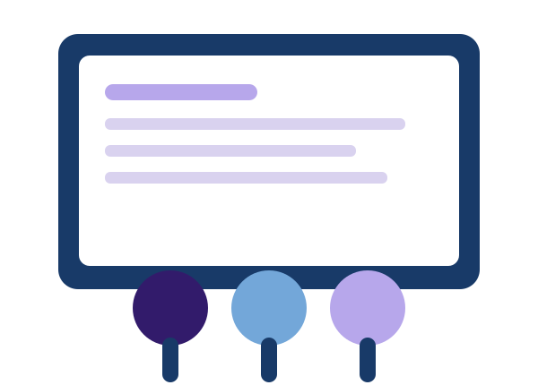

Recursos
Materiales de apoyo para fortalecer las competencias técnicas.
Comunidad académica
Un espacio para compartir recursos, proyectos y experiencias de desarrollo de software.
Conocer servicios
Materiales de apoyo para fortalecer las competencias técnicas.
Espacios para divulgar iniciativas desarrolladas por estudiantes.
Oportunidades para trabajar en equipo y compartir conocimientos.